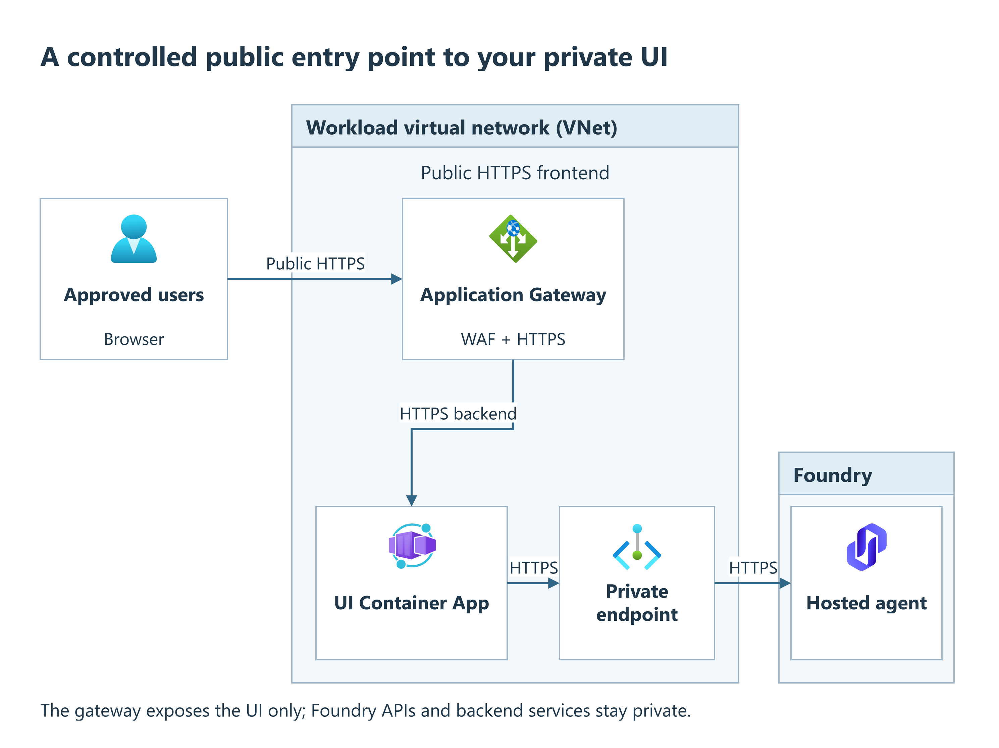

Application Gateway
Objective
Give the Agent Application web UI a controlled public HTTPS entry point while keeping its Container Apps environment private. The optional gateway terminates TLS, applies web application firewall (WAF) rules, and forwards requests over HTTPS to one Container App. The basic routing rule forwards all UI paths, including enabled application routes. Keep application authentication and route authorization enabled.
What you'll have after this runbook
Approved users reach the web UI through Application Gateway and its WAF; the UI and Foundry retain their private backend paths.

The UI makes the authenticated Foundry call server-side. This gateway does not publish Foundry project APIs, hosted-agent endpoints, or Foundry IQ knowledge bases. Their private connectivity, authentication, and authorization still apply. Start with a working deployment from the Deploy full stack runbook and application authentication. For hosted runtime/network prerequisites, use Hosted agents and Microsoft's hosted-agent networking and limitations.
When to use
Use this runbook when the UI already works privately and approved users need a controlled public entry point. Choose the supported entry point before editing:
Choose the entry point
| Need | Choice |
|---|---|
| Public UI for approved client networks, private backend services | Use the template's public gateway below, with explicit public outbound IP address ranges (CIDRs). |
| UI accessible only from your corporate network | Leave publicIngress.enabled false and use VPN/peering plus private DNS. See Network isolation. |
| An internal Application Gateway or an existing corporate ingress | Integrate it separately with the UI backend. The template option has a public IP only; it has no private-frontend switch. |
The gateway requires network isolation. With NETWORK_ISOLATION=false,
it stays undeployed even when publicIngress.enabled is true. For an existing
public deployment, obtain a separately reviewed private-network design before
adding this gateway. Do not change isolation as part of an ingress retry.
Prerequisites
- A deployed UI in an isolated Container Apps environment, and a deployment host with the private connectivity required by the full-stack runbook.
- Provisioning permissions from that runbook, including permission to assign the gateway identity's Key Vault role. Certificate import, DNS changes, and Entra app-registration changes may require separate administrators.
- An approved DNS name, such as
chat.contoso.com, and control of its DNS record. Identify allowed users' or proxies' public outbound address ranges in CIDR notation, such as a single approved IPv4 address followed by/32. - A valid certificate covering that DNS name, with an exportable private key, stored as an enabled PFX certificate in Key Vault. A PFX file packages the certificate and its private key. Follow Microsoft's Key Vault certificate integration requirements. Use your approved certificate import process; never paste a PFX, password, private key, or client secret into deployment parameters or shell history.
- A dedicated Application Gateway subnet. The template defaults to
AppGatewaySubnetat192.168.3.0/27; Microsoft recommends/24for v2 capacity and maintenance headroom. For an existing VNet, have its owner verify the subnet, network security group (NSG) attachment, routing and DNS before provisioning. Do not share the subnet with other workloads.
WAF_v2 and its Standard public IP incur charges even without traffic.
Procedure
Run Steps 1-4 in order. Record the previous publicIngress object, DNS record,
UI URL setting and redirect URIs before changing them.
1. Provision a closed staging gateway
In your platform checkout, edit only the publicIngress entry under
parameters in main.parameters.json. This is a provisioning input, not a
runtime App Configuration setting or an azd env set gateway flag:
"publicIngress": {
"value": {
"enabled": true,
"backendAppIndex": 0,
"allowedSourceAddressPrefixes": [],
"wafMode": "Prevention"
}
}
backendAppIndex is a zero-based position in the composed
containerAppsList, not an app name or resource ID. For a new, unmodified
hosted deployment, composition removes the orchestrator Container App and the
UI (service_name: frontend) becomes index 0. The raw parameter file still
lists the orchestrator first. Custom compositions can differ:
confirm the selected backend is the UI, never ingestion or an old orchestrator.
Keep the existing hosted deployment inputs. If you choose to preview, first
regenerate the selected environment's composed parameters: azd 1.37.1 preview
does not run preprovision hooks and can otherwise read stale
infra/main.parameters.json instead of your edited root file.
Select the intended azd environment and activate the prepared Python environment. From the platform root on the connected host, run one matching preparation command:
Windows:
pwsh -File .\scripts\preProvision.ps1
Linux/macOS:
sh scripts/preProvision.sh
Then run azd provision --preview and confirm only approved resources and
roles change. Repeat preparation after changing inputs or switching
environments. Preparation can create missing additional resource groups
when authorized by CREATE_RESOURCE_GROUPS=true; it is not guaranteed
read-only. See the preview procedure
for group-creation and scope checks.
Apply the approved change from the connected host:
azd provision
This applies foundation changes and runs provisioning hooks; it is not a gateway-only deployment. Follow the full-stack procedure if application deployment is incomplete. Keep the reviewed parameter file on every runner to preserve ingress settings on later provisions.
Read the resulting identifiers. CONTAINER_APP_INTERNAL_FQDN is the backend's
fully qualified DNS hostname:
azd env get-value PUBLIC_INGRESS_ENABLED
azd env get-value PUBLIC_INGRESS_GATEWAY_RESOURCE_ID
azd env get-value PUBLIC_INGRESS_IDENTITY_PRINCIPAL_ID
azd env get-value PUBLIC_INGRESS_PUBLIC_IP
azd env get-value CONTAINER_APP_INTERNAL_FQDN
Expected: enabled is true; the backend FQDN belongs to the UI Container App. With no hostname or certificate configured there is no HTTPS listener. The empty source list and subnet Internet deny rule prevent public browser access to this staging configuration. VNet-origin traffic remains subject to separate private-network controls. Test application health after configuring the listener and UI sign-in URL.
2. Prepare certificate access and DNS
- Record the certificate's versionless secret URI, for example
https://<vault-name>.vault.azure.net/secrets/<certificate-secret-name>/. This is neither an ARM resource ID nor a/certificates/URI. Do not append a secret version: the versionless reference enables certificate rotation. - Verify the gateway's user-assigned identity, using
PUBLIC_INGRESS_IDENTITY_PRINCIPAL_ID. The template assigns Key Vault Secrets User on its deployed landing-zone vault. For an external RBAC vault, have its owner grant that role to this identity at the vault scope; for an access-policy vault, follow the documented secret-read policy. Allow role propagation before continuing. - Verify network access from the gateway subnet to Key Vault. For a private
vault, its private endpoint and
privatelink.vaultcore.azure.netDNS zone must resolve correctly from the gateway VNet. A role assignment alone does not provide network access. Do not make the vault public as a workaround. - Create the public DNS A record for your chosen hostname pointing to
PUBLIC_INGRESS_PUBLIC_IP. Provisioning does not create this public DNS record. Confirm that the gateway can also resolve the UI's backend FQDN to the internal Container Apps environment.
The client-facing certificate covers your public hostname. The backend uses the Container App's own hostname for the HTTP Host header, TLS server name indication (SNI) and certificate validation. Do not replace the backend with the public gateway hostname. Microsoft's Container Apps gateway guidance explains this backend routing pattern.
3. Configure the UI's external sign-in URL
Before user testing, set the UI's CHAINLIT_URL to
https://<your-hostname> using the
runtime-setting change procedure,
with App Configuration
label agent-lz. An explicit UI environment variable overrides App
Configuration; remove or update a conflicting override.
In the UI's Entra app registration, add this Web redirect URI:
https://<your-hostname>/auth/oauth/azure-ad/callback
Apply the URL change by restarting/redeploying the UI Container App:
the UI loads this setting at process startup. This does not require a hosted
agent restart. Do not rewrite the provisioning-managed FRONTEND_APP_ENDPOINT
to the public hostname; it describes the deployed Container App endpoint.
Keep delegated authentication/OBO and source authorization unchanged.
Document permissions are enforced by the application and its data sources,
separately from the gateway's WAF controls.
4. Admit HTTPS clients
Update the same publicIngress.value object, replacing the placeholders:
{
"enabled": true,
"backendAppIndex": 0,
"frontendHostName": "<your-hostname>",
"sslCertSecretId": "https://<vault-name>.vault.azure.net/secrets/<certificate-secret-name>/",
"allowedSourceAddressPrefixes": ["<approved-client-egress-CIDR>"],
"wafMode": "Prevention"
}
Run azd provision again from the connected host. Both hostname and certificate
are required for the HTTPS listener; a nonempty source list admits TCP/443
from those CIDRs. Do not substitute 0.0.0.0/0 without an explicit public
exposure decision.
The gateway also configures an HTTP-to-HTTPS redirect, but the shipped subnet
NSG does not open Internet port 80, so HTTP connections time out.
Distribute the https:// URL directly.
Validation
- Check
azd env get-value PUBLIC_INGRESS_LIVE: true confirms that the hostname and certificate inputs are present. The following checks validate TLS, reachability and chat. - In the Azure portal, open the deployed Application Gateway → Backend
health. Confirm that the backend pool contains the UI FQDN and is healthy.
The shipped HTTPS probe checks
/and accepts 200–499, so a login denial or even a missing page can pass. Then test the UI. - From an allowed client network, run
nslookup <your-hostname>and openhttps://<your-hostname>in a browser. Expect the public gateway IP, a trusted certificate for that hostname, the UI, and a successful sign-in returning to the same hostname. Do not bypass certificate validation. - Send a chat request and confirm the streamed response completes. Test a representative long response and any enabled uploads. The gateway backend timeout is 30 seconds, with separate WAF request/upload limits. Validate transport with completed chat responses.
- Repeat the connection test from an unapproved public network: TCP/443 should be blocked. With test accounts and known restricted documents, verify permitted retrieval and denial for an unauthorized user through Foundry IQ using the delegated native path described in the Deploy full stack runbook. The gateway's network admission does not grant source permissions.
The shipped WAF uses the Open Worldwide Application Security Project Core Rule Set (OWASP CRS) 3.2 in Prevention mode. Check its logs for blocked legitimate requests before widening access. Use narrowly scoped, reviewed rules rather than disabling the WAF.
Detection mode logs without blocking; if temporarily approved for tuning, retain the source allowlist and return to Prevention. See WAF modes and policy behavior. Application Gateway supports WebSockets, but WAF does not inspect frames after the upgrade.
Troubleshooting
| Symptom | Check and recovery |
|---|---|
| No gateway created | Check PUBLIC_INGRESS_ENABLED, isolation, and that Container Apps/environment deployment is enabled with a nonempty app list. There is no PUBLIC_INGRESS environment toggle; edit the parameter object. |
| HTTPS timeout | Verify client egress CIDR, DNS A record, HTTPS listener, and subnet NSG attachment. Test HTTPS, not port 80. Preserve required GatewayManager and AzureLoadBalancer rules. |
| Certificate/listener failure | Check secret URI, certificate expiry/enabled status, identity permissions, private DNS and vault reachability. Check gateway Resource Health and Azure Advisor for Key Vault errors. Versionless references poll for renewal about every four hours; keep renewal monitoring in place. |
| 502 or unhealthy backend | Confirm the selected app is the UI, the image is deployed, and private DNS/routing, Host/SNI and HTTPS work. Use Microsoft's backend-health troubleshooting. Do not disable backend TLS validation. |
| Sign-in redirects to an internal hostname | Recheck CHAINLIT_URL, environment overrides, exact Web redirect URI, and UI process reload. Do not change Foundry endpoints to the gateway URL. |
| UI loads but chat fails or disconnects | Inspect UI/Foundry errors separately from WAF logs and gateway timeouts. Repair delegated auth or private connectivity rather than switching to service identity. Timeout/transport changes beyond the exposed parameter contract require a reviewed infrastructure extension. |
Rollback
- To withdraw newly introduced public client access, set
allowedSourceAddressPrefixes: []in the reviewed root parameter object. Runazd provisionfrom the connected platform root while ingress remains enabled. If reverting an existing gateway update, review and restore its recorded backend, hostname, certificate reference and approved source list only when the previous certificate and route are still usable. Preview those changes before provisioning. If they are not usable, keep public access closed. - From the withdrawn public client network, verify TCP/443 is blocked. This removes the shipped client allow rule, but does not remove separately added rules or revoke application sessions. Review those separately.
- Restore any changed DNS record with its owner. If reverting the UI URL
change, first verify the previous approved private
or gateway route is usable. Restore its recorded
CHAINLIT_URLand any changed environment override, retain its Web redirect URI, and reload the UI. Test sign-in on that route before removing the newly added redirect URI. - Remove the new DNS record if no approved route uses it. Keep certificates and Key Vault access needed by other consumers.
Setting publicIngress.enabled to false does not delete previously created
resources in incremental deployments, and is not an access-revocation procedure.
After closing access and checking remaining references with their owners, arrange explicit deletion of only the dedicated ingress resources (gateway, public IP, WAF policy, subnet NSG and gateway identity), clean up their role assignments, DNS record and obsolete redirect URI, and remove any subnet NSG reference before deleting that NSG.
Coordinate with the network owner. Do not delete the shared subnet, vault or UI, or tear down the environment to undo a gateway change.